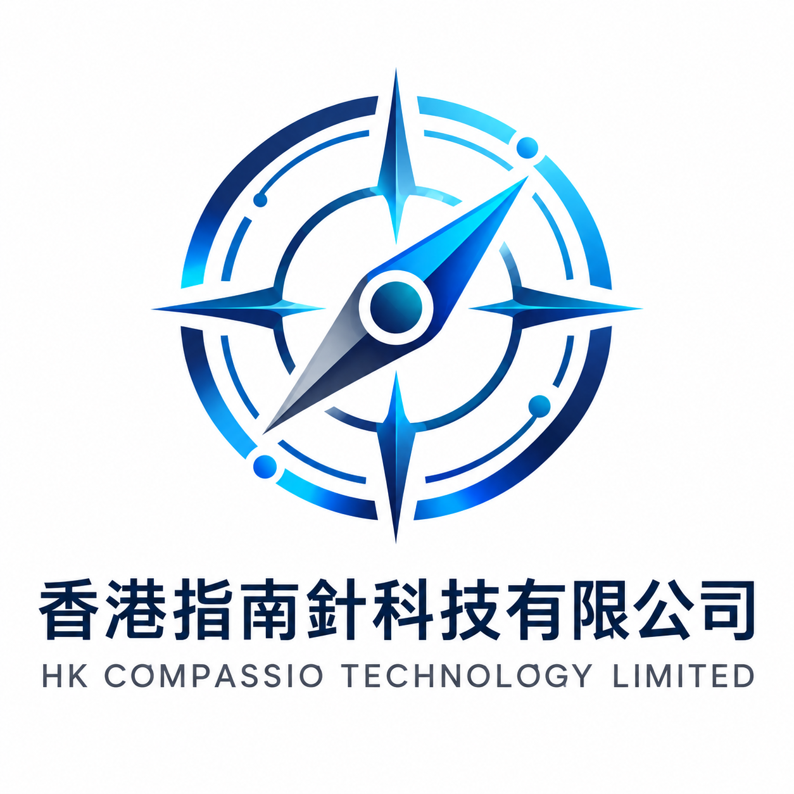

⌘01 / WEB
網站開發
把品牌表達與使用體驗融為一體，讓每一次訪問，都更接近一次有價值的連接。
構建你的線上主場 ↗
指南針科技HK COMPASSIO TECHNOLOGY聊聊你的想法 ↗YOUR NEXT DIGITAL CHAPTER
從一行代碼，到一個新的可能。
我們用網站、小程序、AI 與 SaaS，
將你的業務想法，構建成真正可用的數字產品。
01 / WHAT WE BUILD
不止實現功能，更關注實際使用。
從品牌的第一印象，到業務的每一次運轉，
為不同階段的企業，找到適合的技術方案。
把品牌表達與使用體驗融為一體，讓每一次訪問，都更接近一次有價值的連接。
構建你的線上主場 ↗讓服務觸手可及。連接用戶與業務，讓預約、交易和日常服務在熟悉的場景里發生。
連接更多業務場景 ↗讓 AI 走進真實工作流。圍繞具體問題，打造能幫助團隊處理知識、內容和重復任務的工具。
探索 AI 的實際價值 ↗把業務方法轉化為可持續迭代的產品。從最小可用版本起步，為未來的增長預留空間。
打造你的下一款產品 ↗02 / POSSIBILITIES IN PRACTICE
以下為方案概念演示，展示我們可以與你
一起探索的產品方向，並非已交付客戶案例。
為成長中的企業搭建清晰、有辨識度的官網，把品牌故事、服務能力與咨詢入口連在一起，讓訪客更快理解你。
03 / HOW WE WORK
保持溝通，讓過程透明。
一起把複雜的開發，拆解為明確的下一步。
聊清業務目標、使用場景和優先級，確定項目範圍。
梳理產品結構與交互原型，讓想法有可討論的形狀。
按階段推進功能開發，通過演示與測試持續校准。
完成部署與交付，根據真實反饋規劃後續優化。
04 / MEET YOUR TECHNOLOGY PARTNER
我們是香港指南針科技有限公司，一家專注於軟件開發的科技公司。圍繞網站、小程序、AI 工具與 SaaS 產品，我們幫助客戶將業務想法轉化為數字體驗。
我們相信，好的技術應該解決具體的問題。理解業務、認真設計、扎實開發，是我們對每一個項目的出發點。
LET’S BUILD WHAT’S NEXT
無論是一個初步想法，還是一份完整需求，
先梳理你的項目，我們一起找到下一步。